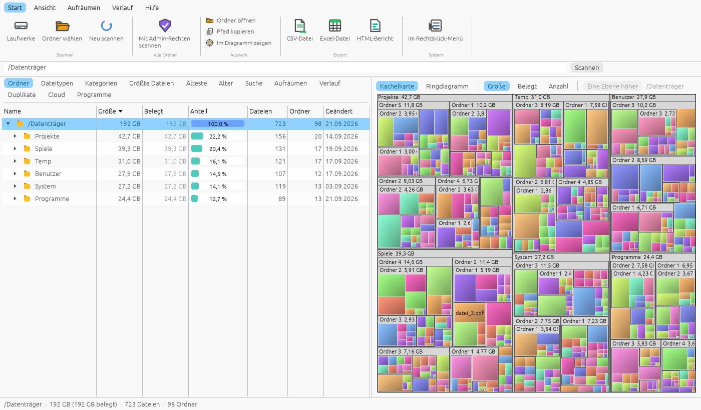
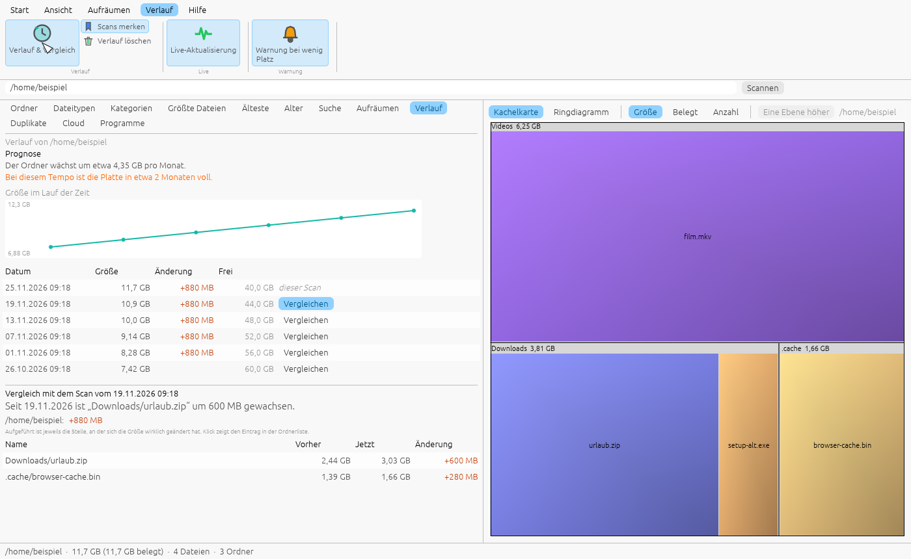
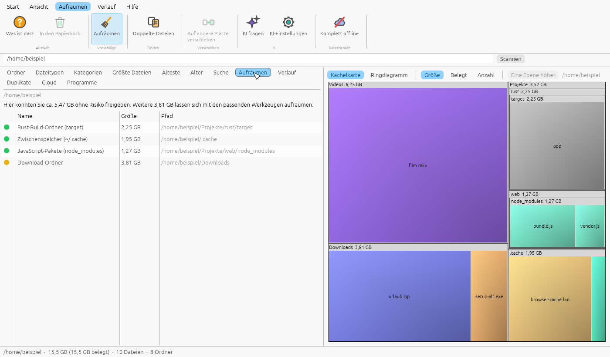
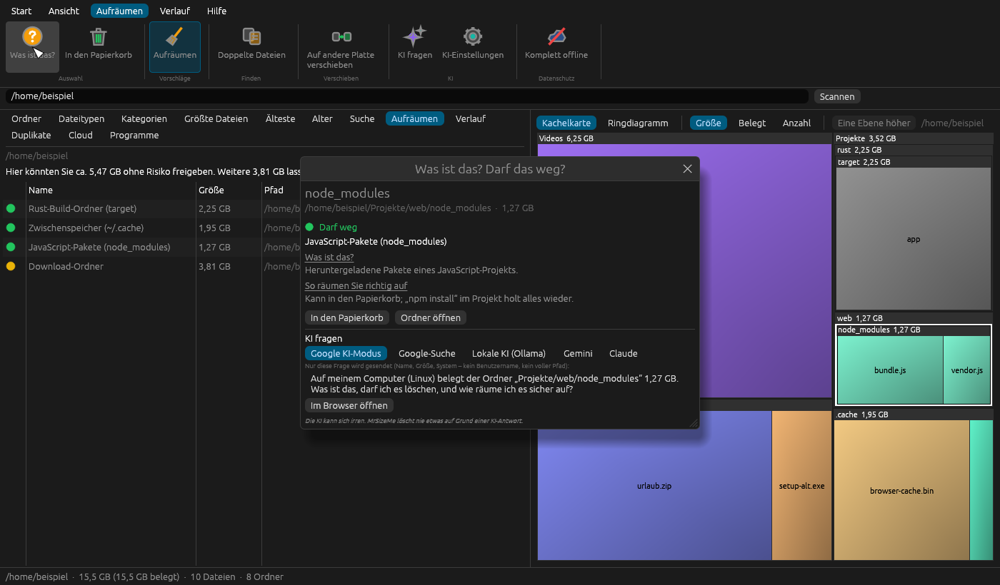
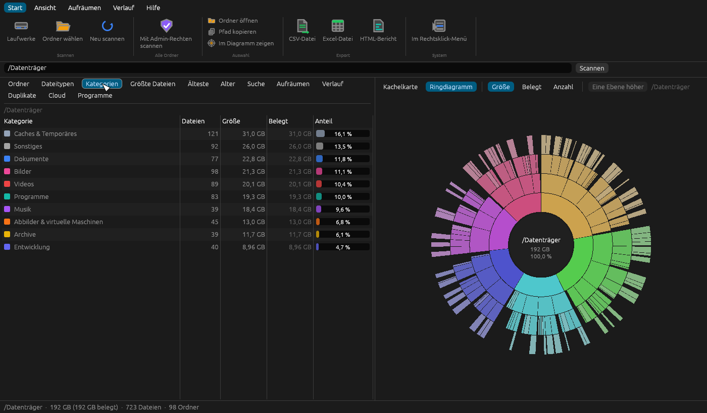
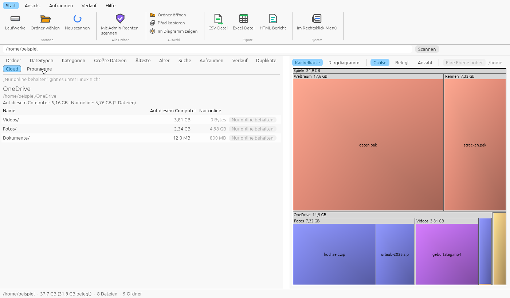
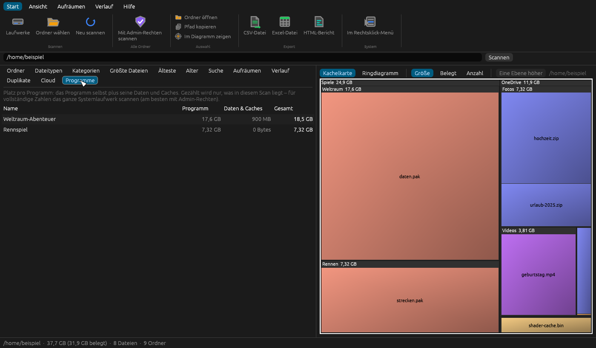

Wohin ist der Platz auf der Platte?
MrSizeMe zeigt in Sekunden, welche Ordner und Dateien Ihren Speicher füllen – und hilft beim sicheren Aufräumen. Für Windows, macOS und Linux, kostenlos und quelloffen.
Kostenlos herunterladenWindows (Installer oder portabel) · macOS (.dmg) · Linux

Funktionen
Schneller Scan, alle Ordner
Mehrere Threads; unter Windows auf Wunsch mit Admin-Rechten direkt über die NTFS-Tabelle. Das Fenster selbst läuft nie mit erhöhten Rechten.
Viele Ansichten
Ordnerbaum, Kachelkarte, Ringdiagramm, Dateitypen, Kategorien, größte und älteste Dateien, Altersverteilung, Suche mit Filtern.
Aufräumhilfe mit Ampel
Rund 40 bekannte große Ordner (WinSxS, Caches, iPhone-Backups, node_modules …) mit dem sicheren Weg zum Aufräumen. Nur Papierkorb, nie endgültig.
KI fragen – wenn Sie wollen
Google-KI-Modus, lokale KI (Ollama), Gemini oder Claude mit eigenem Schlüssel. Sie sehen vorher genau, was gesendet wird: nur Ordnername und Größe.
Verlauf und Prognose
„Seit letzter Woche ist Downloads um 12 GB gewachsen.“ – „Bei diesem Tempo ist die Platte in etwa 2 Monaten voll.“ Dazu eine Warnung bei wenig Platz.
Live-Aktualisierung
Nach dem Scan folgen die Zahlen den Änderungen auf der Platte – ohne neuen Scan.
Duplikate, Cloud, Programme
Doppelte Dateien per Prüfsumme, OneDrive/iCloud „nur online behalten“, Platz pro Programm samt Daten und Caches.
Verschieben-Assistent
Große Ordner auf eine andere Platte: erst kopieren und prüfen, dann das Original entfernen – auf Wunsch mit Verknüpfung am alten Ort.
Export und Kommandozeile
CSV, Excel, HTML-Bericht und JSON. Dazu „Mit MrSizeMe anzeigen“ im Rechtsklick-Menü – nur wenn Sie es einschalten.
Bilder






Datenschutz und Sicherheit
- Gelesen werden nur Namen, Größen und Daten – Dateiinhalte nur bei der Duplikatsuche, die Sie selbst starten, und nur auf Ihrem Computer.
- Ins Internet geht das Programm nur, wenn Sie die KI fragen oder (nach Ihrer Erlaubnis) nach Updates suchen. Der Schalter „Komplett offline“ sperrt alles.
- Updates sind signiert. Eine Datei mit falscher Signatur wird nicht installiert.
- Gelöscht wird nichts endgültig ohne Rückfrage; System- und Benutzerordner sind geschützt.
Download
| System | Datei |
|---|---|
| Windows 10/11 | Installer …-windows-x64-setup.exe oder portabel …-windows-x64-portable.zip |
| macOS 11 oder neuer | …-macos.dmg (Apple-Chip und Intel). Beim ersten Start: Rechtsklick auf MrSizeMe → „Öffnen“. |
| Linux | …-linux-x86_64.tar.gz |
Zu jeder Datei gibt es eine SHA-256-Prüfsumme (SHA256SUMS.txt) und eine minisign-Signatur (.minisig). Prüfen unter Windows: Get-FileHash Datei.